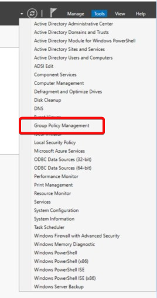
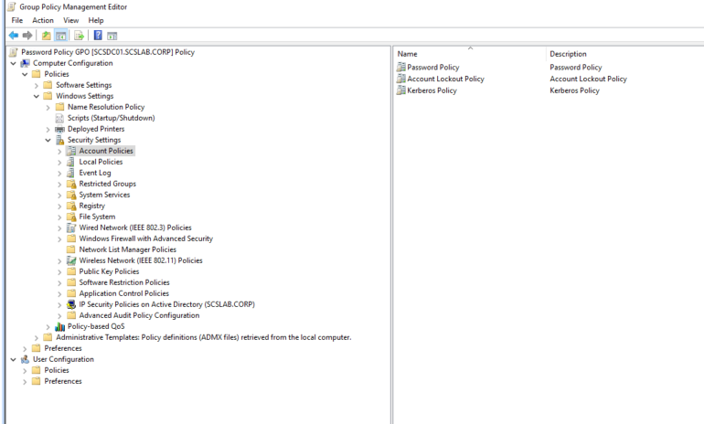
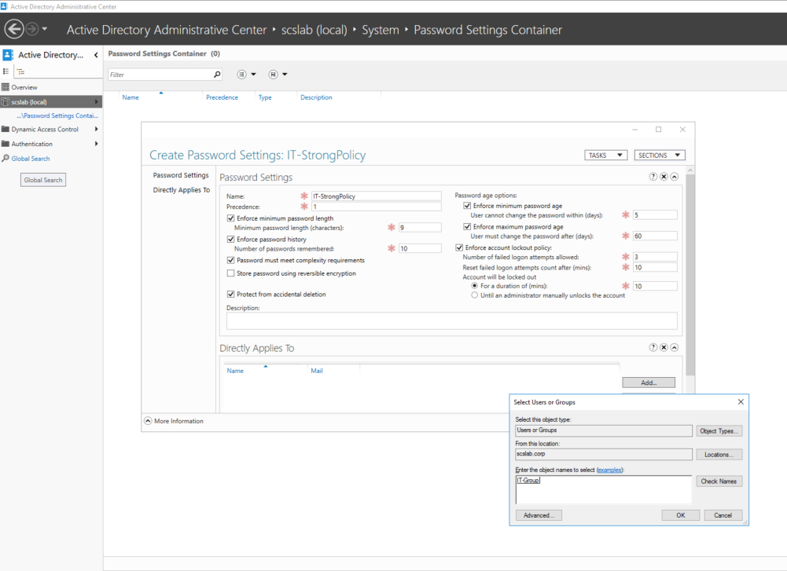
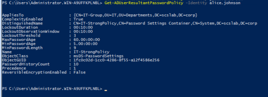

Password policies help enforce account security by setting rules for complexity, length, and change frequency. In this guide, we'll configure a domain-wide GPO to manage password settings centrally.
For domain-wide password policies, apply the GPO at the domain level:
scslab.corp (Root of the domain)
Note: Only the Default Domain Policy or a GPO linked to the domain root will control password policy. GPOs linked to OUs won't apply to password policies.

Computer Configuration
└── Policies
└── Windows Settings
└── Security Settings
└── Account Policies
└── Password Policy
| Setting | Recommended Value |
|---|---|
| Enforce password history | 5 passwords remembered |
| Maximum password age | 60 days |
| Minimum password age | 1 day |
| Minimum password length | 8 characters |
| Password must meet complexity | Enabled (✔️) |
| Store passwords using reversible encryption | Disabled (❌) |
Double-click each setting to configure it.
Run on a client machine or DC:
gpresult /h gp.html
Open the gp.html file in a browser and verify the policy is listed under Computer Settings.
Note: FGPPs do not use Group Policy — they’re configured via Active Directory objects and apply only to users or global security groups (not OUs).
dsac.exe)| Field | Example |
|---|---|
| Name | IT-StrongPolicy |
| Precedence | 1 (lower number = higher priority) |
| Min Password Length | 12 |
| Complexity | Enabled |
| Password Age | Max: 45 days, Min: 1 day |
| Lockout Threshold | 5 attempts |
| Applies To | IT-Group |
Click OK to save.

Check which policy applies to a user:
Get-ADUserResultantPasswordPolicy -Identity <username>
You should see IT-StrongPolicy if the user is in IT-Group.

Fine-Grained Password Policies give you advanced control over password rules for different groups. Use them when a one-size-fits-all GPO isn’t sufficient — especially in enterprises or tiered access environments.